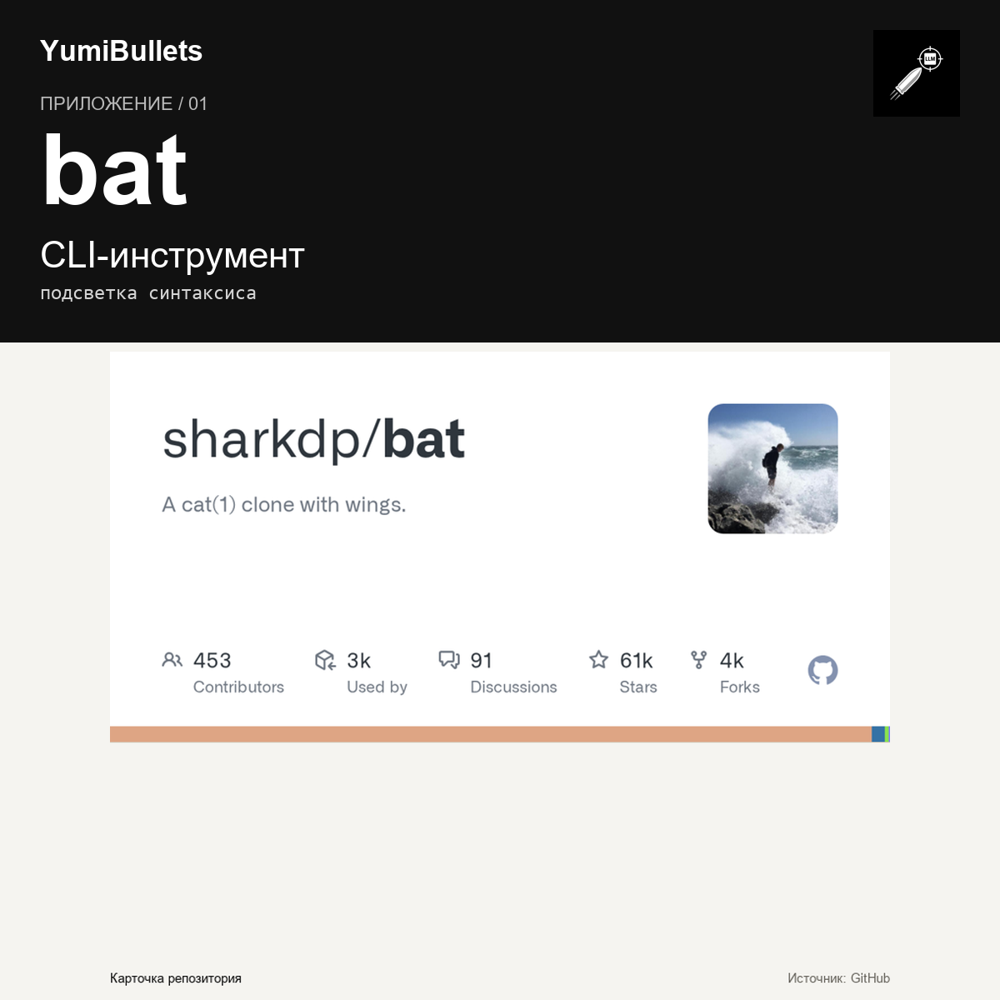

bat: вывод кода с подсветкой прямо в терминале
Читаете исходники или конфиги в терминале? Monochrome-вывод cat'а быстро утомляет. Разберём bat — клон cat(1) с подсветкой синтаксиса и Git-интеграцией. Установка занимает минуту,

Читаете исходники или конфиги в терминале? Monochrome-вывод cat'а быстро утомляет. Разберём bat — клон cat(1) с подсветкой синтаксиса и Git-интеграцией. Установка занимает минуту,